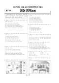

문제지


시험지를 먼저 풀어 보세요. 등급컷·표준점수·난이도는 흐리게 가려 뒀어요.
시험지를 먼저 풀어 보세요. 점수와 인원 수치는 흐리게 가려 뒀어요.
EBSi 응답자 기준으로 가장 많이 틀린 문항은 27번(3점)이고, 오답률은 79%입니다. 상위 15문항 중 1문항은 정답보다 한 오답을 고른 사람이 더 많았습니다(27번: 정답 ⑤ 21.1%, ④ 29.9%). 오답률 50%를 넘은 문항은 6개입니다.
| 순위 | 문항 | 배점 | 오답률 | 정답 | 많이 고른 오답 |
|---|---|---|---|---|---|
| 1 | 27번 | 3점 | 79% | ⑤ | ④ 29.9% |
| 2 | 39번 | 3점 | 65.6% | ④ | ⑤ 29.5% |
| 3 | 36번 | 3점 | 60.4% | ④ | ⑤ 19.4% |
| 4 | 34번 | 3점 | 60% | ② | ④ 25.2% |
| 5 | 28번 | 3점 | 56.4% | ③ | ② 22.7% |
| 6 | 40번 | 2점 | 52.9% | ④ | ① 15.6% |
| 7 | 41번 | 3점 | 47.6% | ③ | ⑤ 21.2% |
| 8 | 42번 | 2점 | 47.4% | ① | ③ 15.4% |
| 9 | 16번 | 3점 | 45.5% | ② | ④ 25.6% |
| 10 | 19번 | 2점 | 45.1% | ① | ③ 21.1% |
| 11 | 10번 | 2점 | 41.8% | ② | ⑤ 17% |
| 12 | 35번 | 3점 | 37.1% | ④ | ③ 10.6% |
| 13 | 20번 | 2점 | 37.1% | ⑤ | ④ 13.6% |
| 14 | 25번 | 2점 | 36.6% | ② | ④ 13.2% |
| 15 | 24번 | 2점 | 36.1% | ② | ④ 22.1% |
EBSi 가채점 응답자 기준 · 전 문항 중 오답률 상위 15문항
출처: EBSi 역대 등급컷·오답률 공개 화면. 가채점에 참여한 EBSi 이용자 응답이라 전체 응시자 정답률과는 다를 수 있습니다.
발행 기관: 시·도교육청(전국연합학력평가). 파일 위치: 이 사이트가 보관한 사본. 저작권은 발행 기관에 있습니다. 원본과 다르거나 게시 중단이 필요하면 연락처로 알려 주세요. 등급컷 출처 구분은 데이터 원칙에서 설명합니다.